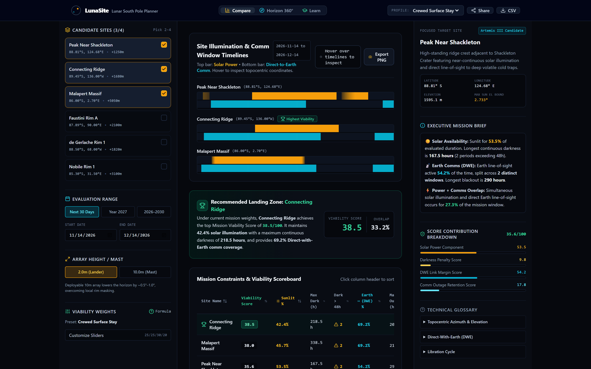
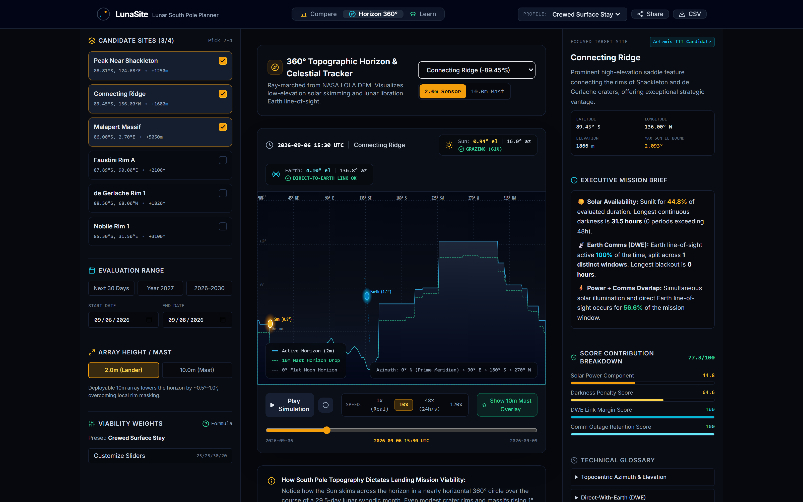
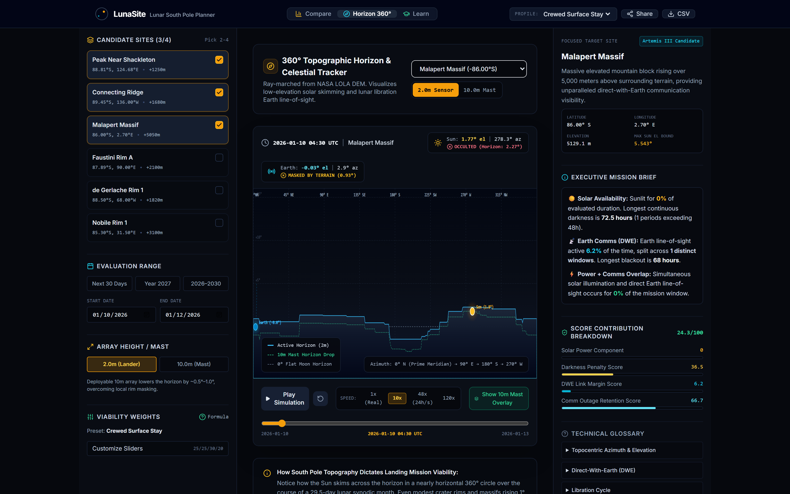
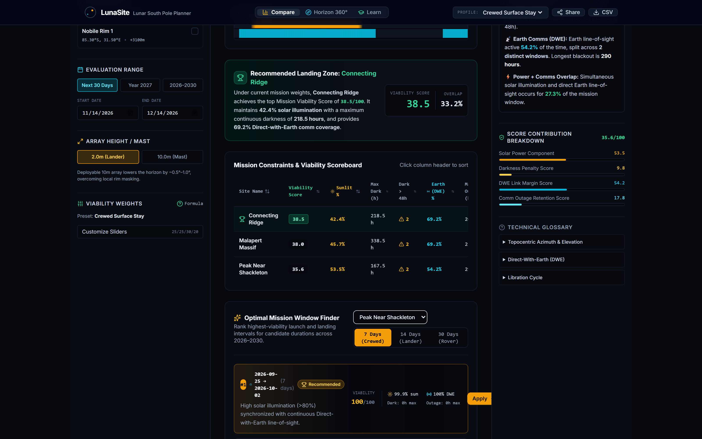
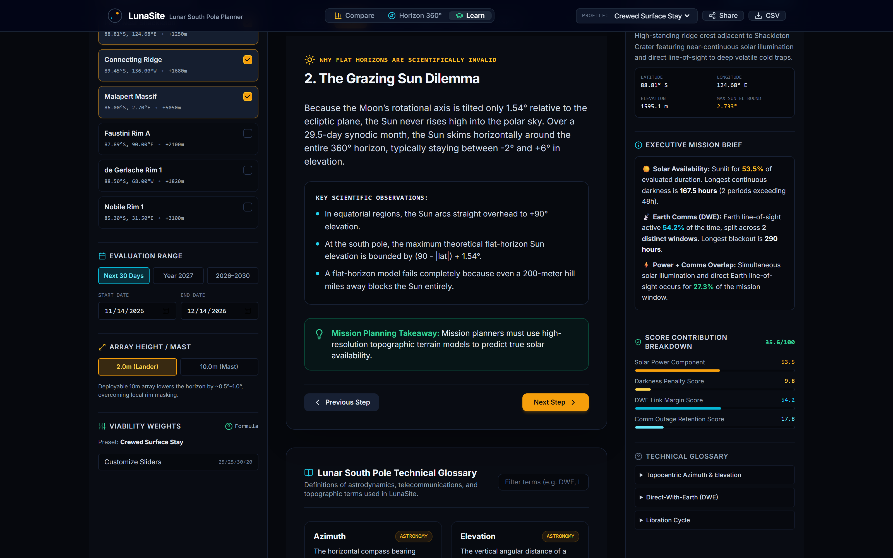
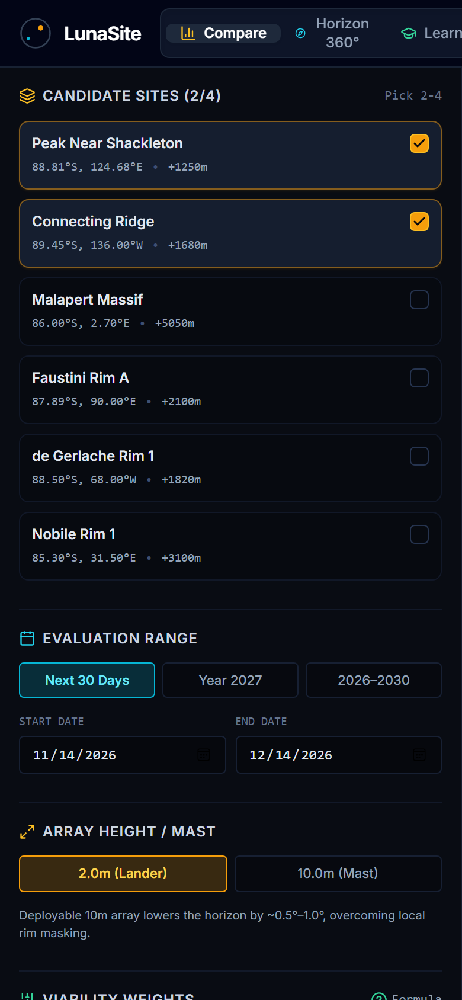

Empowering Mission Planners, Educators & Public with Real LOLA Topography & NAIF SPICE Astrodynamics
At the lunar south pole, celestial bodies never rise far above the horizon. A flat-horizon model is dangerously misleading—a 200 m crater rim kilometers away casts long shadows, plunging landers into cryogenic freeze-out.
Combines offline high-precision astrodynamics (NAIF SPICE DE440s) and LOLA polar DEM ray-marching into a pure client-side web application loading in under 1 second with zero login.
Artemis III Regions (2026–2030)
Evaluated at 30-min precision

Why flat-horizon models fail at the Lunar South Pole
Because the Moon's axial tilt to the ecliptic is only 1.54°, the Sun skims between -3° and +7° across the horizon. Local topography completely governs solar power collection.
Flat-horizon approximations overestimate solar illumination by 25% to 40%. A single shadow event can exceed 400 continuous hours without power at sub-40 K temperatures.
Earth oscillates with a ~27.32-day sidereal libration cycle, dipping below crater ridges and breaking direct communication links when lunar relays are unavailable.
A 10-meter deployable mast clears low foreground ridges, boosting illuminated time by up to +13% across 5 years.
Reproducible planetary pipeline built entirely on open NASA data
Uses planetary ephemeris kernel de440s.bsp, lunar body-fixed frame moon_080317.tf (MOON_ME), and high-precision orientation PCK moon_pa_de421 across 2026–2030.
Ray-marches 360 azimuth rays out to 120 km radius over LDEM_75S_240M (240 m/px) with spherical Moon curvature corrections to compute terrain horizon silhouettes.
Quantizes 87,648 4-variable epochs into a compact 701 KB binary buffer per site. Full 5-year multi-site dataset downloads in < 4.5 MB with zero runtime backend dependency.
Immediate visual confirmation of terrain occlusion and line-of-sight
Renders true lunar ridge profiles across all 360° azimuths. Topographic relief shows peaks and crater rims in crisp detail.
Models Sun as a 0.53° angular disc with partial chord illumination, and Earth as a 1.90° disc with RF direct line-of-sight status.
Scrub smoothly across 5 years with 1x to 120x playback rates. Telemetry badges display precise elevations above local terrain.


Algorithmic multi-factor optimization for landing and surface operations
Balances sunlit fraction, darkness penalty, Earth DWE coverage, and comms outage duration. Four operational presets: Rover Mobility, Static Lander, Crewed Stay, and Education.
Scans the 5-year timeline to identify and rank the top 5 landing intervals for 7-day, 14-day, or 30-day surface missions.
Click "Apply" to jump the entire synchronized timeline directly into the optimal mission window.

Complete transparency and honest scientific reporting
100% of the 87,648 calculated solar elevations obey celestial mechanics limits derived from lunar obliquity: \(E_{\text{sun,max}} \le (90^\circ - |\phi|) + 1.543^\circ\) within ±0.03°.
Fundamental oscillation of Earth elevation measures 27.21 ± 0.08 days, exactly matching the 27.32-day sidereal month across 66 complete cycles.
Peak Near Shackleton 5-year illumination of 38.1% matches published LOLA baselines (38–42%), and winter darkness of 59 days replicates published lunar winter occultations.

Production-ready, accessible, and 100% open source
Perform complex multi-site trade-offs in seconds instead of waiting hours for heavy orbital software suites.
Learn Mode features a 6-step guided walkthrough and an interactive glossary covering astrodynamics, telecommunications, and topography.
WCAG AA contrast compliant, colorblind-safe palettes, mobile responsive down to 360 px, and one-click CSV/PNG export.
